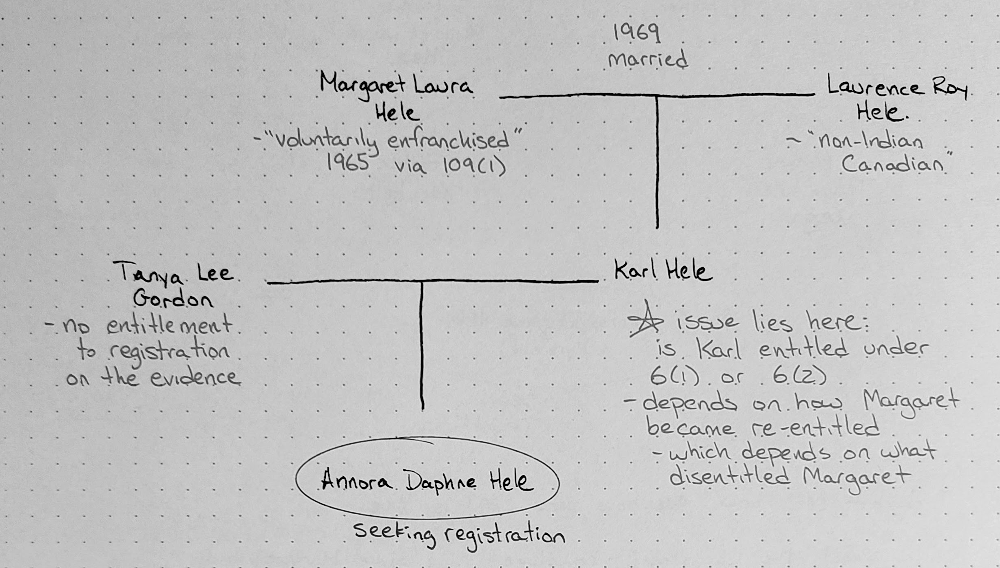

Statutory History of Eligibility for Registration (Status) under the Indian Act
At the end of this post, I provide links to versions of the Indian Act’s registration rules since 1951. Other than working through one example to show the relevance of these rules, I do not attempt to explain what the rules are or the details of any particular amendment. I am still learning that myself. But I hope these statutory references are a helpful starting point for others.
First, here is some background material that presents in broad strokes how eligibility for registration has changed over the years.
- Assembly of First Nations, “History of Registration After the Indian Act”
- Crown-Indigenous Reglations and Northern Affairs Canada (CIRNAC), “Background on Indian registration”
These are good explanations. However, to really understand today’s status eligibility rules, you need to understand the statutory history of the relevant sections of the Indian Act. Just look at some of the language in today’s Act: “Subject to section 7, a person is entitled to be registered if […] the name of that person was omitted or deleted from the Indian Register […] under subparagraph 12(1)(a)(iii) pursuant to an order made under subsection 109(1), as each provision read immediately prior to April 17, 1985, or any former provision of this Act relating to the same subject-matter as any of those provisions.”
I’ll first explain a recent decision from the Superior Court of Quebec, Hele v. Attorney General of Canada. The takeaway is that in order to understand the paths to eligibility today, you need to understand the paths to ineligibility from the past. The evolution of these rules can be difficult to follow, so I have collected below the various versions that have existed since 1951. The most important historical version for application of today’s eligibility requirements is the version that existed immediately prior to April 17, 1985, but occasionally, reference to even older versions will be necessary.
Hele v. Attorney General of Canada
This case was about a father (Karl) trying to have his daughter (Annora) registered under the Indian Act. Because there was no evidence that Annora’s mother was entitled to register, Annora’s eligibility turned on whether Karl was entitled to register under s. 6(1) or under s. 6(2).
If Karl was entitled under s. 6(1), then Annora would be entitled to register under s. 6(2). If Karl was entitled under s. 6(2), then Annora would not be entitled to registration. This is because of the “second-generation cutoff” built into the operation of ss. 6(1) and 6(2).

So what determined whether Karl was entitled under s. 6(1) or under s. 6(2)? That depended on his mother Margaret’s path to re-entitlement.
Karl’s mother, Margaret, had purportedly “voluntarily enfranchised” (gave up her status) in 1965 via s. 109(1). She later married a “non-Indian Canadian” in 1969. If Margaret’s voluntary enfranchisement in 1965 was effective, then she would have become re-entitled to registration through s. 6(1)(d) [re-entitlement after voluntary enfranchisement]. If, however, Margaret was never able to voluntarily enfranchise (this was the argument Karl was making), she would have instead lost her eligibility by “marrying out” in 1969 and then would have become re-entitled through s. 6(1)(c) [re-entitlement after marrying out]. This difference is significant because if Margaret became re-entitled through s. 6(1)(c), then Karl would be entitled under s. 6(1). If instead Margaret became re-entitled through s. 6(1)(d) [re-entitlement after voluntary enfranchisement], Karl would have only been entitled himself through s. 6(2).
Judge Barin, after an intensive exercise of statutory interpretation, concluded that voluntary enfranchisement was not available to Margaret in 1965. The Governor in Council did not have “the power to enfranchise unmarried Indian women.” Thus, instead of voluntarily enfranchising in 1965, Margaret lost her status in 1969 when she married out. She thus regained eligibility through s. 6(1)(c). So, Karl is eligible under s. 6(1) and Annora under s. 6(2).
You can see that in order to understand this decision, I needed to refer to the Indian Act as it existed prior to 2017 (when Karl had applied) and prior to 1985. The point of this blog post is to make that research easier for you by linking directly to the historic acts and amendments since 1951 that affect the registration eligibility rules.
Statutory History [direct link]
There are many more amendments to the Indian Act than I list below. These are only those since 1951 that affected the registration eligibility (status) rules.
- SC 1951 (15 George VI), c 29.
- RSC 1952, c 149.
- SC 1956, c 40.
- SC 1958, c 19.
- RSC 1970, c I-6. This is the version to consult when the current Act refers to s. 12 or s. 109 as they read immediately prior to April 17, 1985.
- RSC 1985, c I-5. This was basically a restatement of the Act as it was in force previously as part of the consolidation process.
- RSC 1985, c 32 (1st Supp), s 4. This contains the substantive amendments to the eligibility/ineligibility provisions and moved them from ss. 11 and 12 to ss. 6 and 7. It also repealed s. 109 (enfranchisement).
- RSC 1985, c 43 (4th Supp), s 1. Slight amendment relating to deceased persons.
The Department of Justice allows you to browse the Act as it was in force at any point in time from 2002 onward: <laws-lois.justice.gc.ca/eng/acts/i–5/PITIndex.html>. But I’ll still link to the two post-2002 amendments to the registration rules next.
- SC 2010, c 18 (html; pdf). This was Bill C-3, in response to McIvor v. Canada.
- SC 2017, c 25 (html; pdf). This was Bill S-3, in response to Descheneaux c. Canada.
Doing Your Own Research
If you want to do your own research into statutory history, you can find Revised Statutes of Canada through HeinOnline’s database called “Revised Statutes of Canada.” Your library might subscribe to that. If you’re at UBC, here’s the direct link.
And you can find the yearly statutes in a database called “Annual Statutes.” Here’s the direct link for those at UBC.
If you are aware of more readily available sources, please link them in the comments!
Notes
1. ↑ Indian Act, RSC 1985, c I-5, ss 6, 7. In this short post, I cannot fully convey the harmful effects the Indian Act has had on Indigenous peoples in Canada. The Indian Act has been used as a tool of “aggressive assimilation” (The Final Report of the Truth and Reconcillation Commission of Canada, vol 1 (Ottawa, 2015)). It was a “central element to the Canadian government’s colonial policy” (Ibid at 106) and was used to “undermine First Nations’ self-government” (Ibid at 107). It has played a role in the trauma disproportionally experienced by “Indigenous women, girls and 2SLGBTQIAA people” (see generally Reclaiming Power and Place: The Final Report of the National Inquiry into Missing and Murdered Indigenous Women and Girls, vol 1a (2019)). Nevertheless, status has important practical implications and is important to individuals for different reasons (see Claire Truesdale, “The Problem with Indian Status, Part 1: So Who Gets Status Anyway?”, JFK Law Corporation (10 July 2015)).
2. ↑ Indian Act, supra note 1, s 6(1)(d).
3. ↑ Hele v Attorney General of Canada, 2020 QCCS 2406.
4. ↑ Today, this is s. 6(1)(a.1).
5. ↑ Today, s. 6(1)(a.1).
6. ↑ Specifically, s. 6(1)(c.1), at the time of Karl’s application, or today, s. 6(1)(a.3)(i).
7. ↑ Today, s. 6(1)(a.1).
8. ↑ See McIvor v Canada (Registrar of Indian and Northern Affairs), 2009 BCCA 153.
9. ↑ See Descheneaux c Canada (Procureur Général), 2015 QCCS 3555.